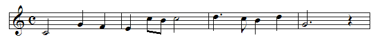

| Rests are used to mark periods of silence. |
| Here are the basic rest symbols. |
| Dots modify notes by extending their durations. |
| When dotted, a note (or rest) is held for |
| Here is an example using mixed durations along with dotted notes and a rest. |
|  |
| Ties connect two or more notes of the same pitch so as to extend the initial note for the desired duration. |
| A primary use for them results from the fact that individual note durations are not allowed to span bar lines. |
| Ties are therefore employed to hold notes over from one measure to the next. |
| Though less rigorously adhered to, traditionally there is also a proscription against spanning what is referred to as the imaginary bar line, an invisible line that divides every measure in half. |
| In this case, ties are used to best maintain readability. |
Return to music theory.